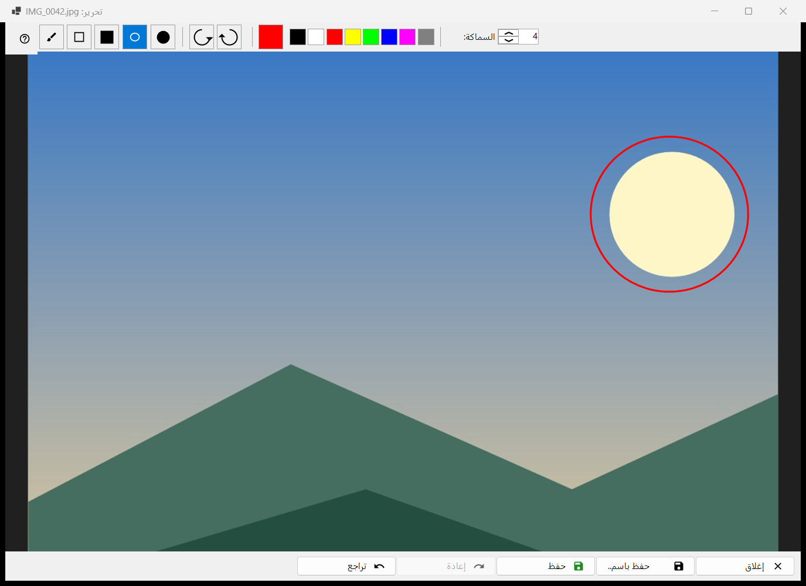
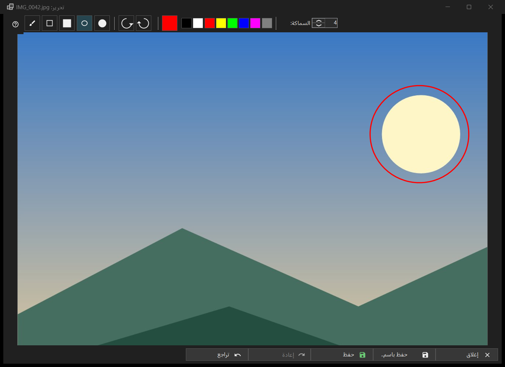

تحرير الصورة
الغرض من هذه النافذة
محرر صغير لصورة ثابتة واحدة: ارسم أشكالًا، واقتصّ، وأدِر، واقلب، ثم احفظ فوق الأصل أو كملف جديد. يُفتح، واسم ملف الصورة في عنوانه، من الزر تحرير في شريط الأدوات أو من أول عنصر في قائمة الصورة، ولصورة ثابتة فقط (وليس لصورة متحركة). يقرأ المحرر الملف من جديد ويعمل على نسخته الخاصة.


بهذا الترتيب
- اضغط تحرير في العارض.
- اختر أداة ولونًا وسماكة.
- ارسم على الصورة، أو اقتصّ أو أدِر أو اقلب؛ ويعيدك تراجع خطوة إلى الوراء.
- اضغط حفظ للكتابة فوق الأصل، أو حفظ باسم.. لملف جديد.
- أغلق النافذة؛ وإذا كانت هناك تغييرات غير محفوظة فأجب عن السؤال.
عناصر النافذة
الأدوات
في الشريط: اقتصاص وفرشاة ومستطيل ومستطيل ممتلئ وبيضاوي وبيضاوي ممتلئ. المفاتيح هي C وB وR وO (وللأدوات الممتلئة لا مفاتيح). اضغط Shift أثناء رسم مستطيل أو شكل بيضاوي لتحصل على مربع أو دائرة. وعند تمرير المؤشر على أداة يظهر اسمها ومفتاحها.
اللون والسماكة
يفتح زر اللون مربع حوار الألوان، وبجواره ثماني عينات سريعة (أسود وأبيض وأحمر وأصفر وأخضر ليموني وأزرق وماجنتا ورمادي). تتراوح السماكة من 1 إلى 64 بكسل من بكسلات الصورة (الافتراضي 4)؛ والمفتاحان [ و] يغيّرانها بمقدار واحد. اللون والسماكة مشتركان بين كل الأدوات.
الاقتصاص
مع أداة الاقتصاص، اسحب إطارًا على الصورة. لا يظهر الزر تطبيق الاقتصاص إلا أثناء وجود إطار. ويفعل Enter الشيء نفسه؛ أما Esc فيزيل الإطار دون اقتصاص. ولا تُقصّ الصورة إلا عندما تطبّق ذلك.
التدوير والقلب
تدوير لليسار (Ctrl+[) وتدوير لليمين (Ctrl+]) يديران البكسلات. يقلب المفتاحان H وV الصورة أفقيًا ورأسيًا. وهذا يغيّر الصورة نفسها، بخلاف R في العارض الذي يدير العرض فقط.
تراجع وإعادة
يتنقل تراجع (Ctrl+Z) وإعادة (Ctrl+Y أو Ctrl+Shift+Z) في سجل يصل إلى 20 خطوة ضمن حد للذاكرة. يعرض شريط الحالة الحجم، وبعد أي تغيير يعرض مُعدَّل مع خطوة N من M؛ وعندما يُسقط الحد أقدم الخطوات يقول تم تجاهل الخطوات القديمة: حد الذاكرة.
الحفظ
يكتب حفظ (Ctrl+S) فوق الأصل ولا يُفعَّل إلا بعد حدوث تغيير؛ وقبل ذلك تقول تلميحته لا شيء للحفظ: لم يتم تغيير الصورة. وبالنسبة إلى JPEG يُطرح عليك سؤال مرة واحدة لكل جلسة: ستتم إعادة ضغط ملف JPEG - وهذا إجراء لا رجعة فيه. ويُحتفظ بتاريخ التصوير وبقية بيانات EXIF. يُكتب الملف باسم مؤقت ثم يُستبدل؛ وإذا فشل الحفظ تبقى النافذة مفتوحة مع ذكر السبب.
حفظ باسم..
يفتح مربع حوار ملف مع إضافة (معدَّل) إلى الاسم. الصيغ هي PNG وJPEG وBMP وTIFF وWebP؛ والصورة بأي صيغة أخرى تُعرض بصيغة PNG. ويُرفض المجلد المؤقت للأرشيف. بعد الحفظ فوق الأصل يعيد العارض تحميله؛ ويُفتح الملف الجديد في المجلد نفسه؛ أما الملف في مكان آخر فيُذكر اسمه في شريط الحالة.
عندما يكون حفظ معطّلًا
يقول شريط الحالة لا يمكن الكتابة فوق الأصل مع السبب: هذه الصيغة لا تُكتب، أو الملف للقراءة فقط، أو لا يوجد إذن كتابة، أو برنامج آخر يحتفظ بالملف، أو الملف متعدد الصفحات أو الإطارات (يُحرَّر الأول فقط)، أو هو داخل أرشيف، أو مفقود. ويبقى حفظ باسم.. متاحًا.
الإغلاق
يغلق إغلاق أو Esc النافذة؛ ويلغي Esc أولًا ضربة قيد الرسم، ثم يزيل إطار الاقتصاص. وعند وجود تعديلات غير محفوظة يكون السؤال: التعديلات غير محفوظة - إغلاق المحرّر وفقدان التعديلات غير المحفوظة؟ حفظ يحفظ أولًا، وعدم الحفظ يتجاهل، وإلغاء (الافتراضي، وكذلك Esc) يبقيك في المحرر. ويُطرح هذا السؤال حتى لو كانت التأكيدات متوقفة.